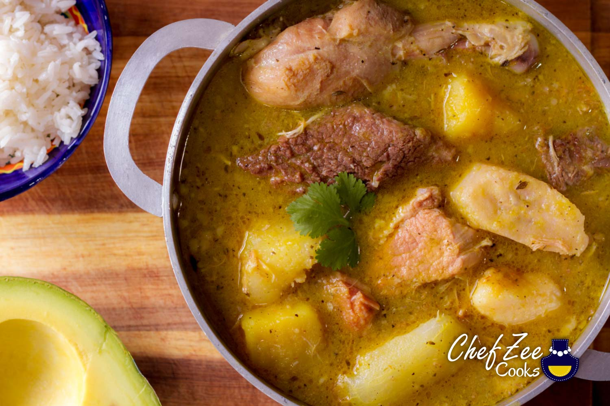

Sancocho

Description
TCombine pumpkin, sweet potatoes, eddeos, yuca, potatoes, plantains, corn, celery, carrots, green pepper, cilantro, and adobo seasoning in the simmering pot. Return soup to a boil. Reduce heat to low and continue simmering until the sancocho is thick and the root vegetables are soft, 1 to 2 hours. Stir in the remaining half of the water by gradual increments to replace any evaporated liquid.
Sancocho is sancocho.
Ingredients
- 5 gloves garlic, minced
- 1/4 cup dried oregano
- 2 teaspoon salt
- 5 chicken drumsticks
- 1 pound bone in beef
- lots of other stuff
- water
- dominican mother to make you this
Steps
- Mash garlic, oregano, and 1 teaspoon salt together in a bowl.
- Douse chicken, beef, and pork with lemon juice in a large bowl. Drain half the liquid. Mix the mashed garlic, half of the onions, 2 tablespoons vegetable oil, and vinegar into the meat mixture.
- Heat the remaining 1/2 cup vegetable oil in a large skillet over medium-high heat. Add the meat mixture in batches and cook until browned on all sides, 15 to 20 minutes.
- Transfer the browned meats into a large pot. Add half of the water, chicken broth, beef consomme, 2 bouillon cubes, and 1 teaspoon salt. Bring to a boil; reduce heat to low and simmer, covered, until meats are more than halfway cooked through, about 40 minutes.
- Combine pumpkin, sweet potatoes, eddeos, yuca, potatoes, plantains, corn, celery, carrots, green pepper, cilantro, and adobo seasoning in the simmering pot. Return soup to a boil. Reduce heat to low and continue simmering until the sancocho is thick and the root vegetables are soft, 1 to 2 hours. Stir in the remaining half of the water by gradual increments to replace any evaporated liquid.